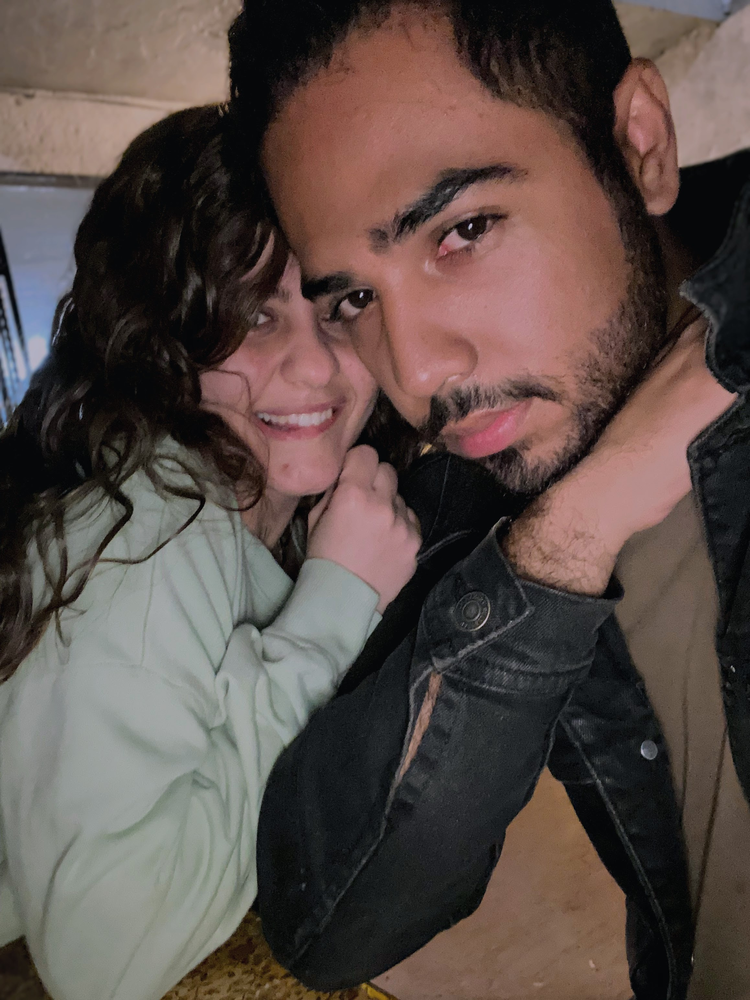

Ola, no sabes lo complicado que es escribir cartas porque tengo que ser muy honesto.
Aunque ya no hemos salido y no hablamos como antes, no te imaginas la cantidad de cariño que te he tenido todos los días hasta la fecha y lo mucho que te extraño. Eres jodidamente importante para mí, mucho más de lo que podría expresarte, y no sabes cuánta falta me haces muchas veces.
Me gusta muchísimo verte feliz, ¿sabes? Todos los días progresas tanto y creces muchísimo en todo sentido, y AAAAAAA, es genial. Eres genial, sipi. Deseo tantísimo que te vaya increíble en todo, que sigas estando mamadísima y seas la pinche mejor nutrióloga que existe, porque eres completamente maravillosa y wow. Te admiro mucho, de verdad.
Nunca antes había escrito una carta de cumpleaños, y no sé si debo decir "feliz cumpleaños" aquí AJSJASJA, pero ojalá sea uno de los mejores que puedas tener. Me alegra tanto poder seguir en tu vida después de tantos años, no pienso alejarme (no del todo) por nada en el mundo, porque quiero seguir viendo cómo cumples todo lo que deseas y cómo la vida te hará más feliz cada vez u.u.
Me tienes para todo, y sin importar qué sea, siempre estaré para ti. Te quiero muchísimo, y tu existencia me es tan especial como el sonido del mar por la mañana, y sabes cuánto amo el mar. Valoro inmensamente todo contigo; gracias por, en cierta forma, dejarme ser parte de ti y de tu vida, jamás me arrepentiré de nada contigo, eres de las mejores personas que he podido conocer y no cambiaría nada, ni un solo momento.
Lysm, Pepe ❤️
